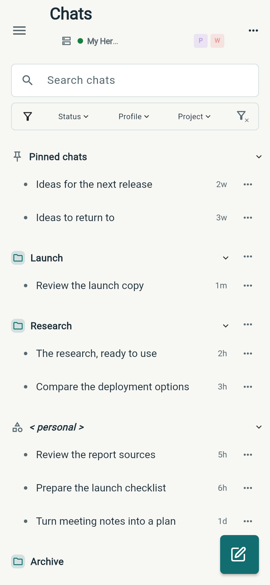
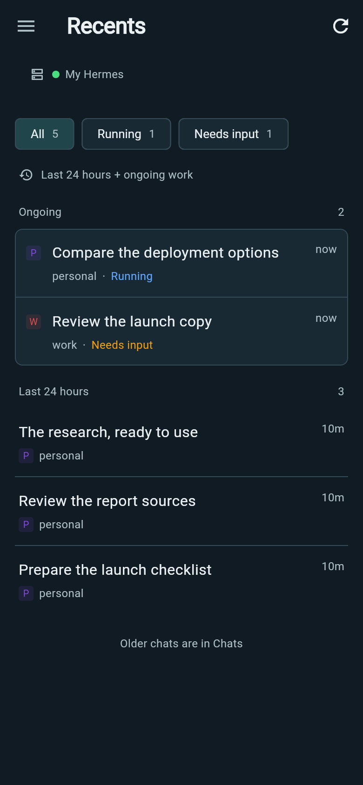

Every thread,
in its place.
Research in one profile. A launch in another. Wing brings profiles, projects and conversations into a workspace you can organize—and Recents makes it easy to move between work already in motion.
Real Wing interfaces · Demo content
Take a closer look
The right context, every time.
Use profiles to keep different agents and their conversations distinct. Browse across profiles, narrow the list to the ones you need, or switch into a profile to start the next conversation.
Profile colors help you recognize the context at a glance. Chats and Administration use the same profile identity, so the conversation and the settings stay attached to the right agent.
Give each project its place.
Group conversations by project so the research, decisions and follow-ups for a piece of work stay easy to find. Search the list, pin the conversations you return to, and filter by profile, project or status.
Pick one or several profiles; the Project choices follow that selection. Clear the Profile filter to browse projects across all profiles. Conversations without a project remain visible in their own group.
Multitask without losing the thread.
Recents puts chats with messages from the last 24 hours alongside ongoing work, across profiles on your current connection. Open it when you want to catch up, switch tasks, or see which conversation needs you next.
Choose All, Running or Needs input. Open a conversation and Wing takes you to its owning profile; the back control returns you to Recents.

You can also open Recents from Wing’s Android launcher shortcut menu. Older conversations remain in Chats.
Leave a draft. Come back to it.
Unsent text and staged files survive navigation and restart. Move to another conversation, check Health, or put your phone away, then return to the draft when you are ready.
For example: start a research request, switch to a launch conversation, and use Recents to check the research when it needs your input. Each thread keeps its own context.